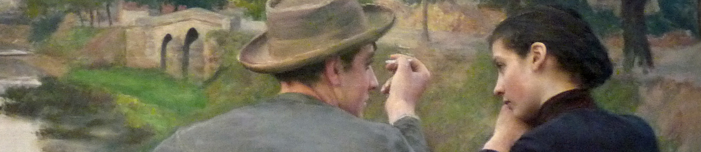

Joseph Lam-Weil
Theoretical Machine Learning, Statistical testing, Bandit, medical applications.
I am a postdoc at Lorraine University in Nancy, with Anne Gégout-Petit, Denis Villemonais and Simon Toupance since April 2021.
I write lessons from the tokens on AI, data science, and research software.
Publications
-
A minimax near-optimal algorithm for adaptive rejection sampling, ALT 2019
Juliette Achdou, JL-W, Alexandra Carpentier, Gilles Blanchard.
Code
-
Local minimax rates for closeness testing of discrete distributions, Bernoulli 2022
JL-W, Alexandra Carpentier, Bharath K. Sriperumbudur.
-
Minimax optimal goodness-of-fit testing for densities under a local differential privacy constraint, Bernoulli 2022
JL-W, Béatrice Laurent, Jean-Michel Loubes.
Experience
PhD
-
Magdeburg university (November 2017-March 2021): under the supervision of Alexandra Carpentier.
Visiting student
-
Paul Sabatier university of Toulouse (November 2018-December 2018): worked on identity testing under local differential privacy constraint, with Jean-Michel Loubes and Beatrice Laurent-Bonneau.
Research intern
-
Thales (May 2017-October 2017): worked on anomaly detection using deep learning methods, under the supervision of Marc Schoenauer.
-
xbird (June 2016-September 2016): applied machine learning methods to glycemia prediction for diabetics.
Teaching Assistant
-
Advanced Probability Theory: 1 semester.
-
Introduction to Probability and Statistics: 2 semesters.
-
Probability Theory: 1 semester.
Events
-
MLSS 2019 in London.